PhD Candidate
Red Dot Award
Winner — 2025
Architecture PhD turned product designer. Led UX/UI design for Breezy, a connected pediatric breathing-therapy system — Bluetooth hardware paired with an iOS companion app — recognized with a 2025 Red Dot Design Award.
Healthcare UX Systems
Telemetry, data visualization, and interaction design for a connected pediatric care device.
Explore healthcare work Track 02Spatial & XR Design
Architectural systems, cultural exhibition spaces, and spatial narratives built through plans, models, and immersive scenes.
Explore spatial work Other worksFan Collection Design
Sports card concepts and AI-assisted visual workflows translating Formula 1 speed into collectible identity.
Explore other workBreezy — Connected Breathing Therapy System
Bluetooth nebulizer hardware + iOS companion app for pediatric respiratory treatment adherence.
Lead Product & UX/UI Designer on a cross-functional team — directed the iOS app design end-to-end and the interaction logic bridging tactile hardware with software, from concept through Red Dot recognition in 2025.
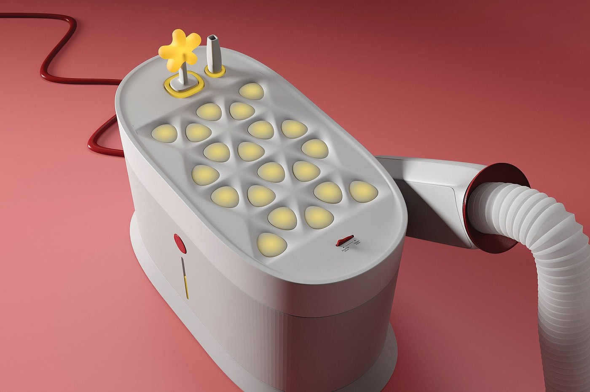
62% of children under six show fear, crying, or resistance during standard nebulizer treatment, and clinical adherence stays below 50% as a result. Sessions run about 15 minutes — roughly three times a toddler's natural attention span — while caregivers have no way to read Bluetooth telemetry (oxygen concentration, breath strength) in real time.
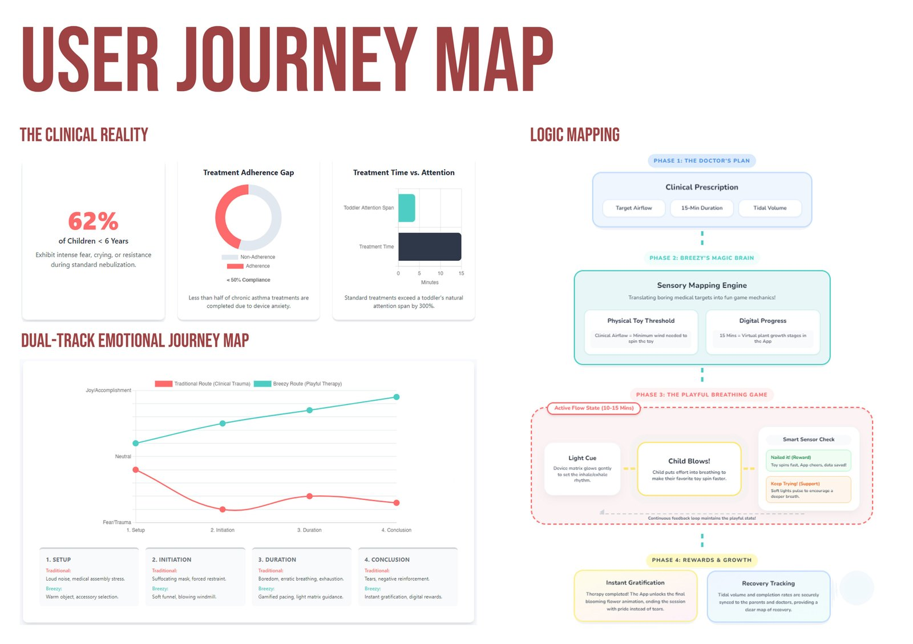
Breezy reframes the clinical protocol as a four-phase logic — the doctor's prescription feeds a sensory-mapping engine that converts clinical targets into physical thresholds. Interchangeable magnetic modules — a windmill, a sailboat, a star — let a child choose and physically attach their own accessory, building autonomy into a routine that used to require restraint. A soft-silicone tactile LED matrix replaces the clinical control panel with a warm, non-medical surface that lights up in sequence to show progress as the child blows.
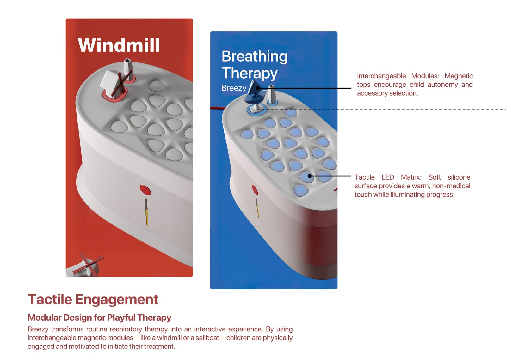
The iOS companion app mirrors the child's effort in real time — a windmill spins and a character's cheeks puff as they exhale — while oxygen concentration, breath strength, and session progress render as high-contrast data cards a caregiver can read at a glance. A weekly recovery view turns completed sessions into a visible streak.
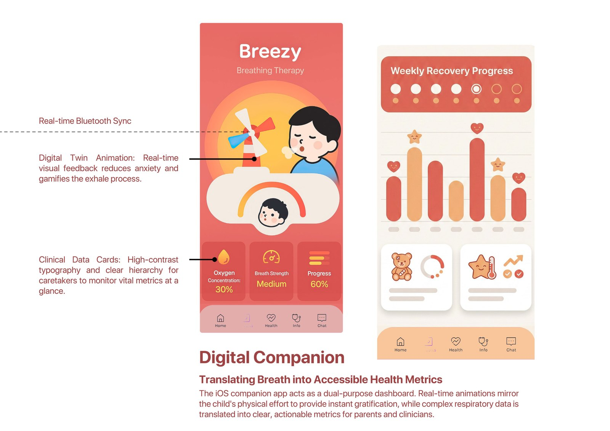
Built for a dual-user interface: SF Pro Rounded across a three-tone warm palette (#EB706B, #FE926B, #FFC854), with a fixed type scale — 36pt bold titles down to 14pt data labels and 11pt captions — so the screen stays legible to a toddler and precise enough for a caregiver checking vitals mid-session. The tab architecture was scoped to accommodate future tele-health integrations.
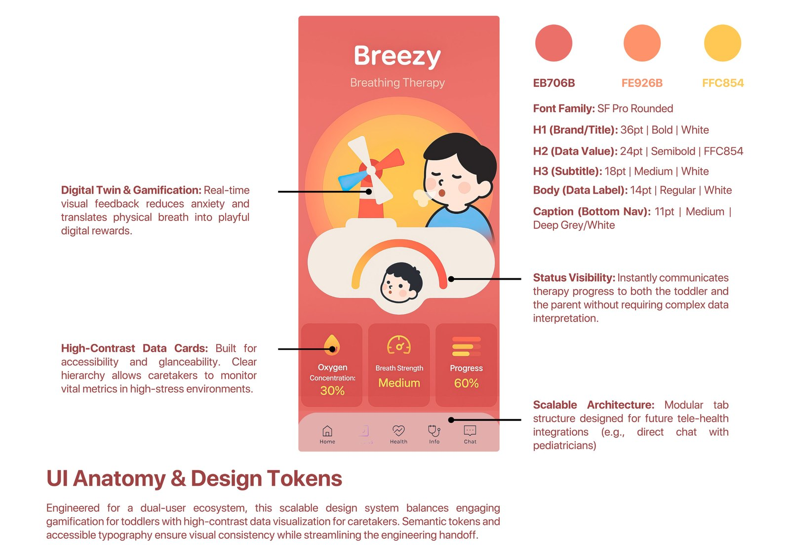
Early sketches worked through the hose's flexible range and mask geometry alongside competing concepts for the breathing indicator — a radial dial, a wave pattern, a full dot matrix — before settling on the diamond-grid tactile surface that shipped.
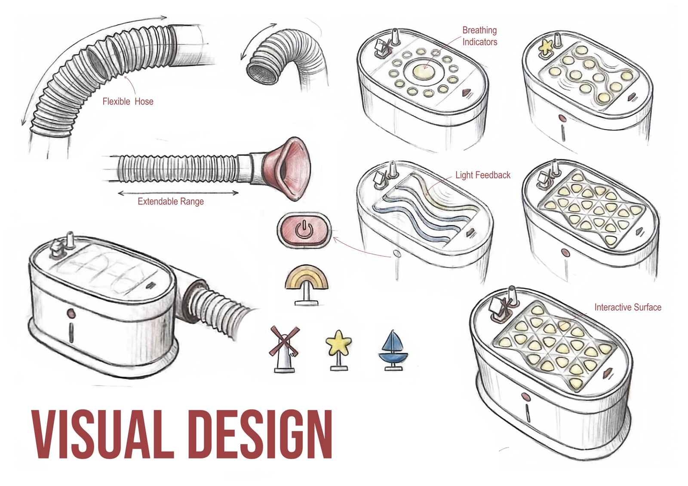
2025 Red Dot Design Award — Winner. Validated cross-platform UI components and system architecture with AI-assisted rapid prototyping in Figma prior to engineering handoff.
Making clinical data legible to a five-year-old
Breezy's iOS app converts live Bluetooth telemetry — oxygen concentration, breath strength, session progress — into a visual system a child can read at a glance, without losing the precision a caregiver needs.
Every data point maps to a physical, collectible reward: completing a session earns a token (windmill, sailboat, star, rainbow), turning a compliance metric into something worth finishing.
Design and prototyping ran through Figma with AI-assisted workflows, validating user flows and component architecture before engineering handoff.
- ToolsFigma, prototyping, user journey mapping
- DataReal-time Bluetooth telemetry, clinical prescription rules
- UsersPediatric patients + caregivers, dual-literacy interface
- Result2025 Red Dot Design Award — Winner
The Flora Transit — Biophilic Station Installation
A conceptual intervention for a traditional railway station, turning the passive act of waiting into a warm, plant-filled spatial pause.
Spatial and emotional storytelling project — developed a biophilic waiting-room system through station behavior research, activity mapping, form studies, and narrative visualization.
The Flora Transit reimagines the train station as an emotional anchor rather than a purely functional threshold. A pink greenhouse-like structure, layered with planting and soft circulation, creates a dedicated sanctuary for reunions, farewells, and quiet anticipation.
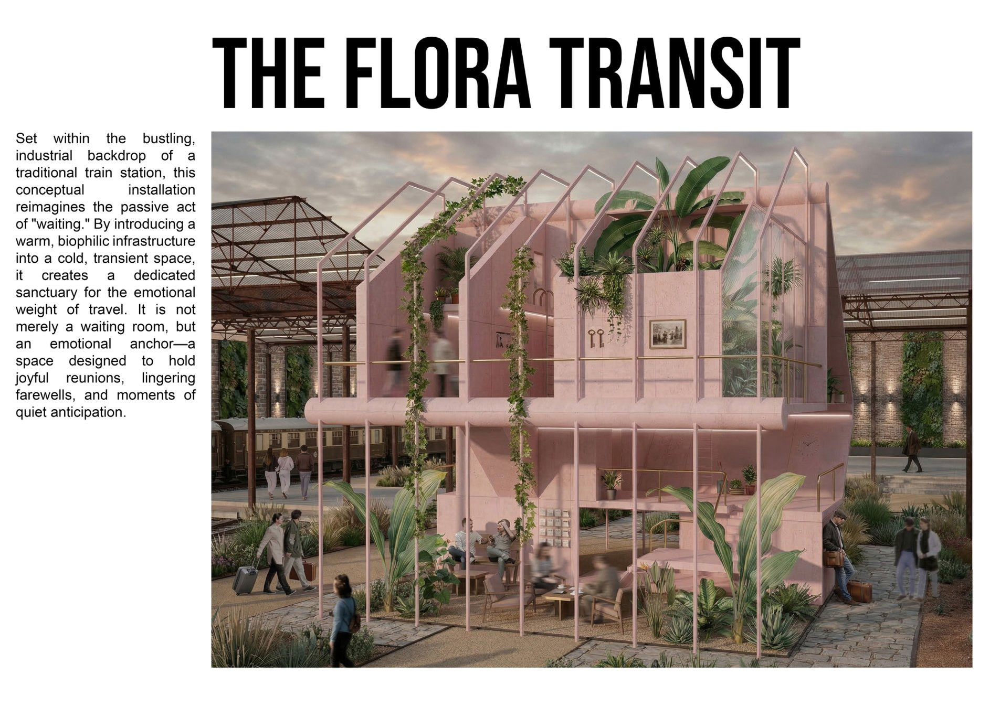
The research board maps the emotional weight of station waiting and departure, combining depression-related data, passenger movement, and site observations to identify where a softer spatial program could intervene.
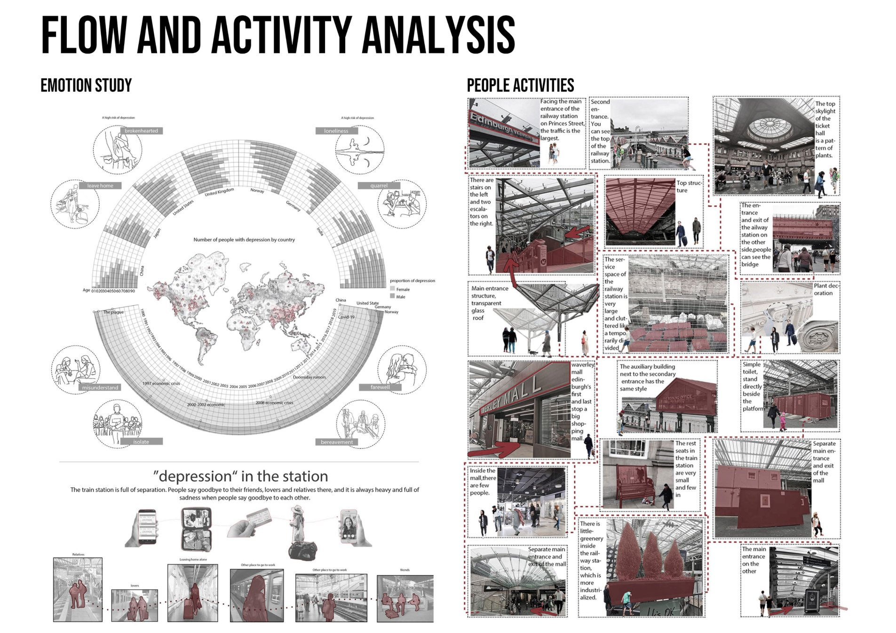
Form and program studies translate public activities into architectural modules. The exploded axonometric clarifies how structure, greenhouse envelope, planting, and social programs stack into a compact station-side installation.
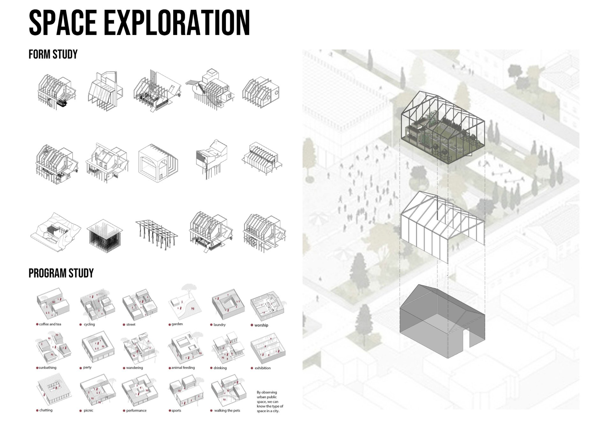
The storytelling board develops the project language from sketches to architectural volumes, showing how emotional cues, biophilic elements, and station infrastructure are translated into a coherent spatial narrative.
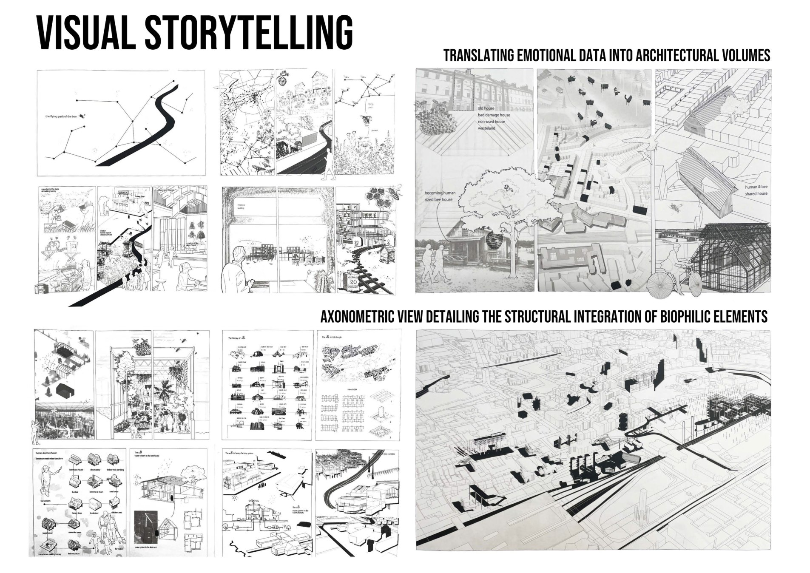
Urban Waterfront Regeneration — Master Planning & Water-Sensitive Urban Design
A waterfront urban design proposal integrating mixed-use development, public realm connectivity, and water-sensitive environmental systems.
The project explores urban-scale planning through interconnected landscape, circulation, water, and building systems, combining master planning, spatial analysis, environmental strategies, and architectural visualization.
The master plan organizes mixed-use development around a connected network of public spaces, pedestrian routes, green infrastructure, and waterfront access. Spatial strategies coordinate built form, circulation, landscape, and water as an integrated urban system.
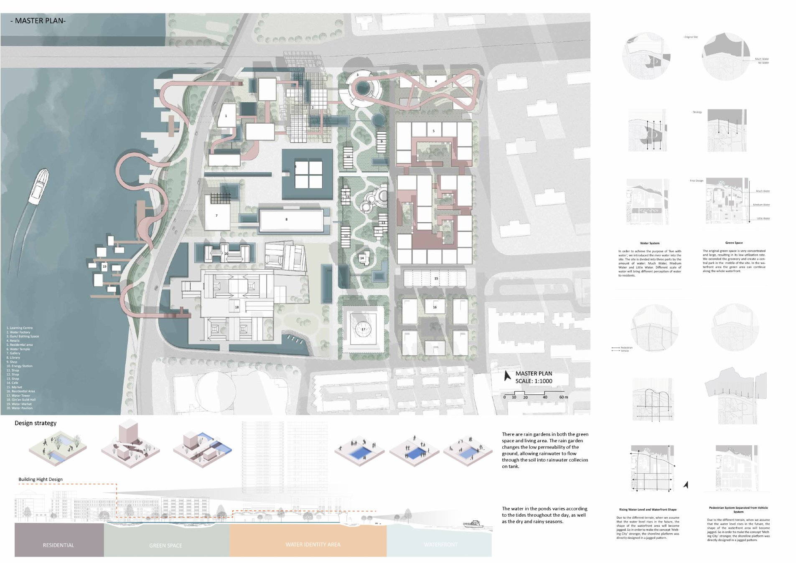
Water-sensitive strategies integrate ponds, rain gardens, green roofs, runoff management, and landscape systems into the development framework, using environmental infrastructure as both a functional and spatial component of the public realm.
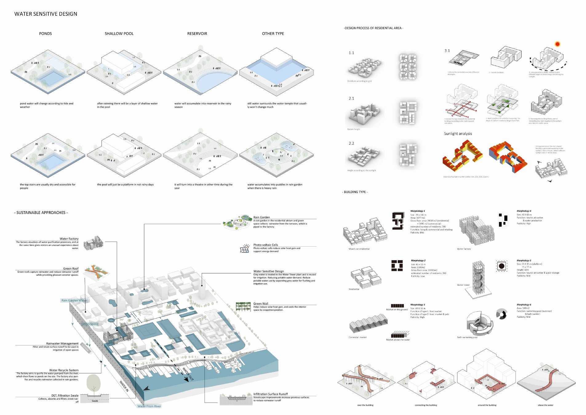
Layered diagrams illustrate how building massing, circulation, landscape, water infrastructure, and public-space networks interact across the site, translating multiple planning systems into a coherent spatial framework.
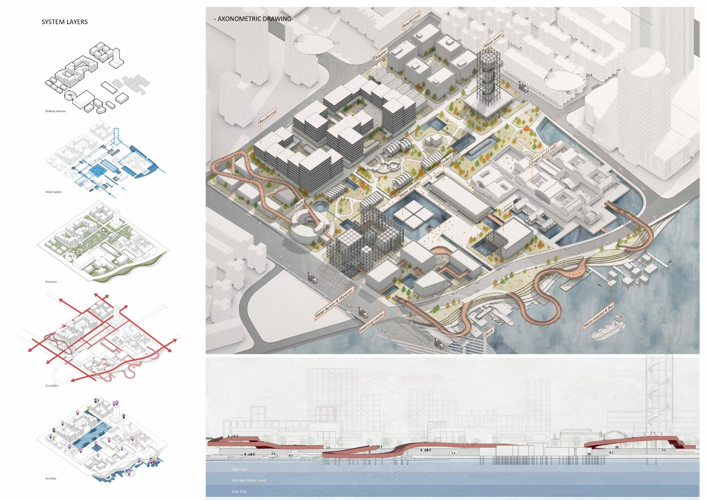
Sections, perspectives, and axonometric views examine the project at pedestrian scale, showing how waterfront access, landscape, built form, and public spaces shape movement and everyday spatial experience.
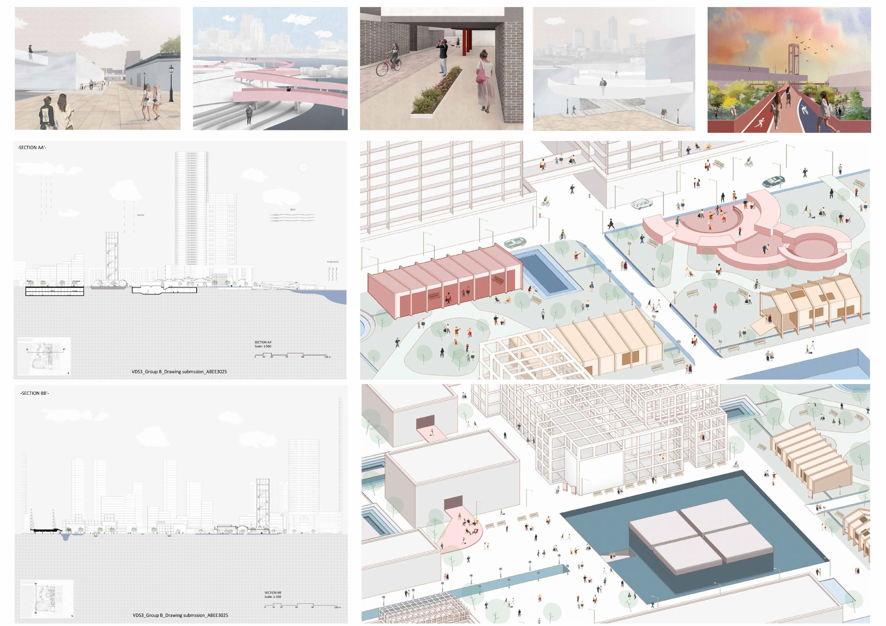
Light House — Sailor Club & Cultural Centre
A spatial narrative for seafarers and the public, using architectural atmosphere, circulation, and exhibition rooms to bridge isolation and civic memory.
Architecture and spatial storytelling project — developed a cultural centre concept through massing studies, axonometric organization, meditation-room atmosphere, and exhibition-hall sequencing.
Light House frames a sailor club as a social and cultural threshold. The proposal uses muted materiality, controlled light, and narrative rooms to make maritime life legible to visitors while preserving a quiet, reflective atmosphere.
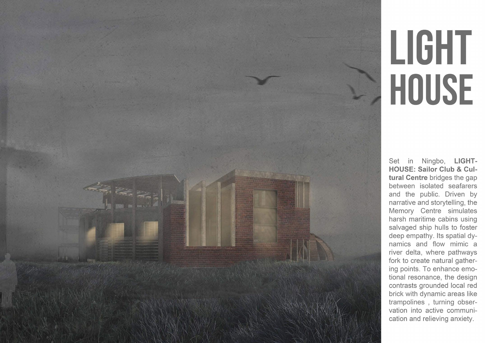
The axonometric view clarifies the project's spatial hierarchy: public gathering areas, reflective rooms, and circulation paths are layered as a readable architectural system rather than a single isolated object.
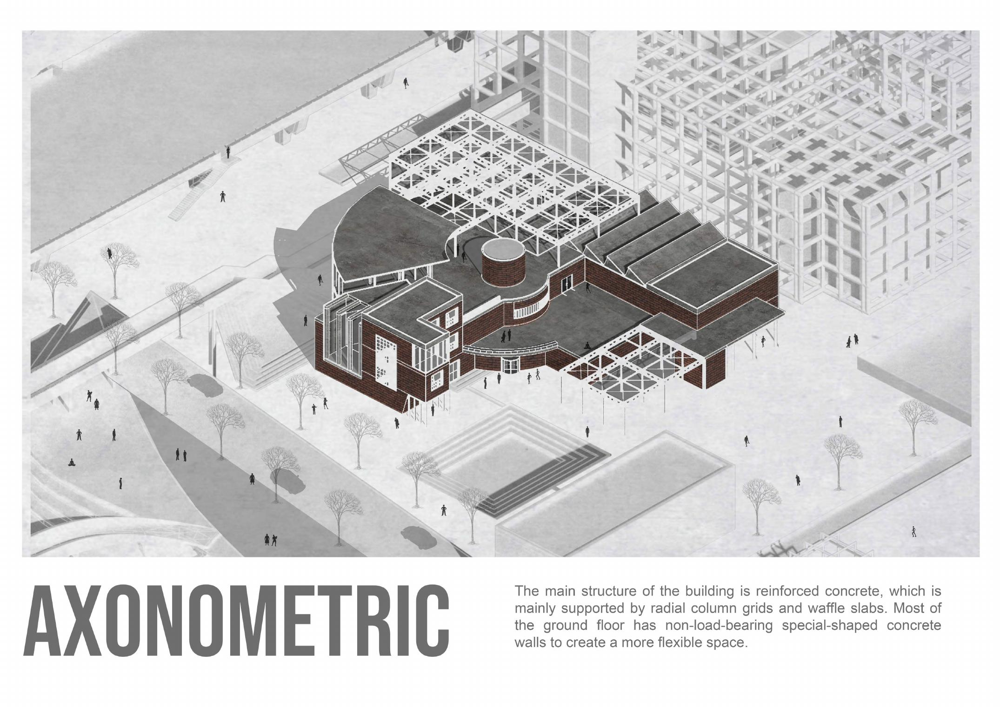
The meditation room translates the project theme into an interior condition, using enclosure, scale, and light to create a slow emotional transition from maritime hardship to public empathy.
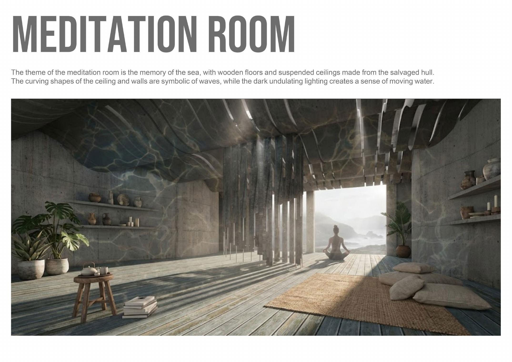
The exhibition hall turns archival and experiential material into a staged route. Visitors move through a sequence of views and gathering points, allowing the cultural narrative to unfold spatially.
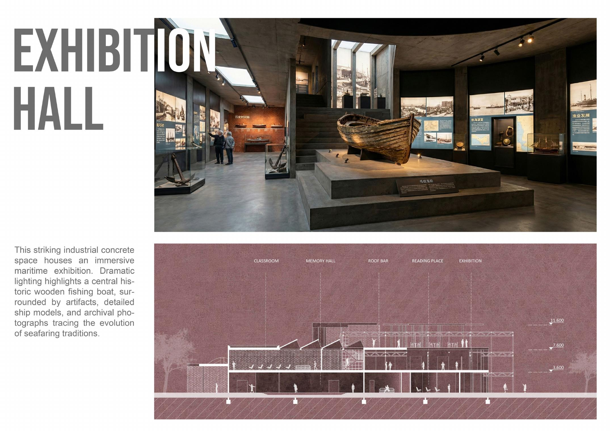
Cultivating Memories — Exhibition Design
An exhibition proposal for the historic Zishi Granary in Chaiqiao, transforming agricultural memory into a tactile visitor journey.
Exhibition and experiential design project — developed spatial mockups, suspended graphic panels, organic sand islands, and visitor-flow logic for a rural memory narrative.
The project treats the former granary as a communal living room. Material samples, large-scale models, suspended panels, and sand-table islands work together to connect agricultural history with contemporary public experience.
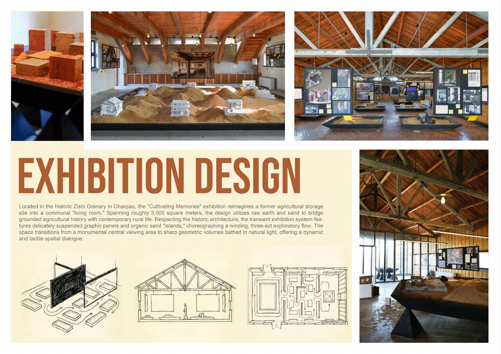
The second board develops the exhibition as a choreographed route, balancing documentation, tactile material evidence, and changing spatial density so visitors can read the site through movement.
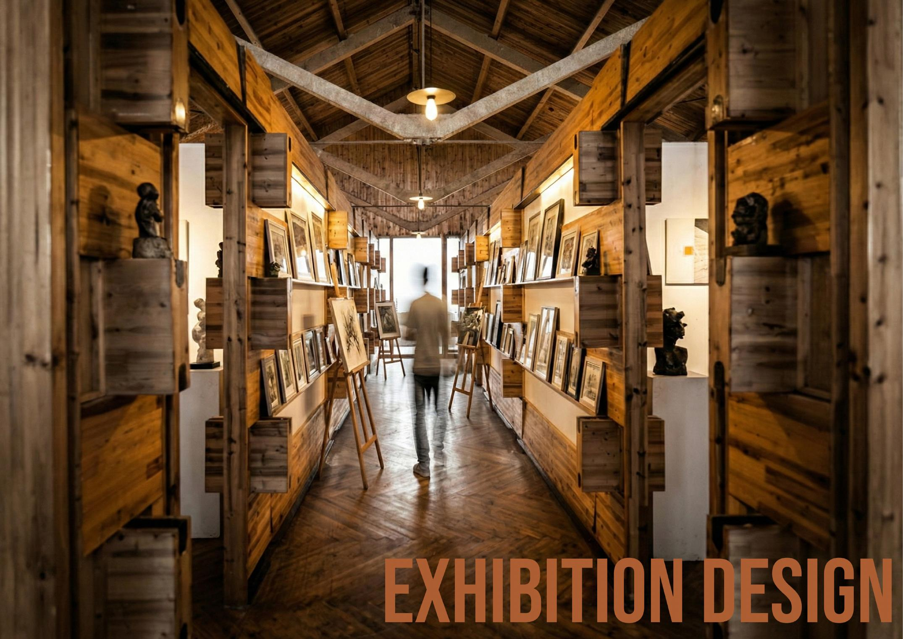
From architectural systems to spatial computing
Breezy's physical form and the layout of its hardware components draw directly on training in architectural spatial systems — designing how a body interacts with an object in three dimensions, not just on a screen.
As a freelance exhibit designer at Shanghai Key Design Group (2023–2025), directed 2D/3D spatial mockups, floor plans, and presentation decks that translated complex proposal data into intuitive spatial narratives for cross-disciplinary stakeholders.
In progress: extending Breezy into an AR companion experience — spatial overlays for real-time telemetry during treatment sessions. This case study will be published as the work reaches prototype stage.
- ToolsRhino, AutoCAD, SketchUp, V-Ray
- MethodSpatial storytelling, floor plans & elevations, physical prototyping
- ContextPhD research, spatial & social evolution of the Shanghai French Concession
- Recognition2025 SGADC Singapore Art Design Competition — Bronze
Fan Collection Design — Formula 1 Sports Cards
A collectible sports-card concept exploring how Formula 1 speed, airflow, team identity, and fan culture can become a visual product system.
Visual and design-ops exploration — combined market research, AI-assisted iteration, autograph-card composition, and tokenized visual rules for a fan-focused collectible series.
The cover establishes the collection's core visual language: racing velocity becomes a dramatic atmosphere around the card, using spotlighting, motion trails, and driver presence to turn speed into collectible identity.
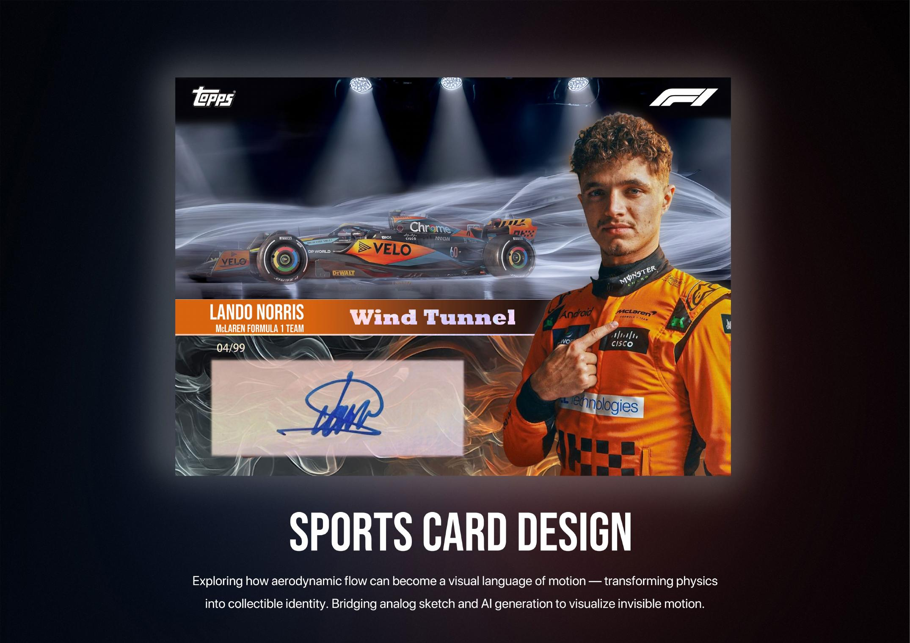
The autograph card places the signature as the emotional anchor while preserving the speed narrative through aerodynamic smoke, racing livery colors, and clear scarcity information.
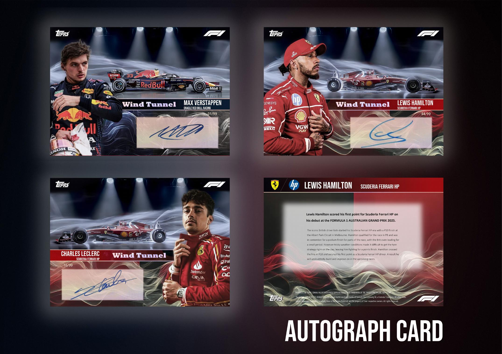
The workflow board documents how sketching, prompt iteration, layout refinement, and final compositing can be organized into a repeatable production pipeline for collectible variants.
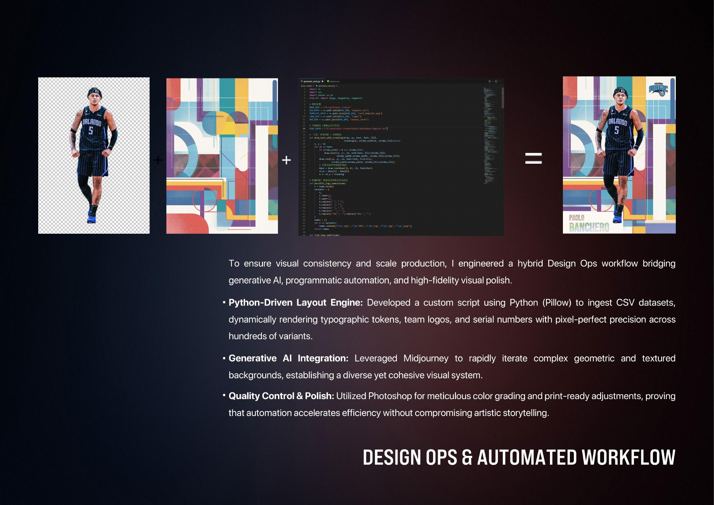
The token board turns the collection into a system: color, typography, rarity labels, image treatments, and motion motifs become reusable rules rather than one-off poster effects.
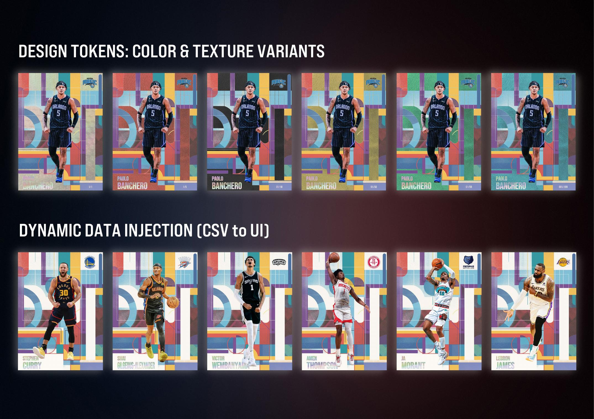
The market board frames the opportunity around Formula 1 collectibles in China, connecting fan behavior, scarcity, visual spectacle, and brand culture to a concrete product direction.
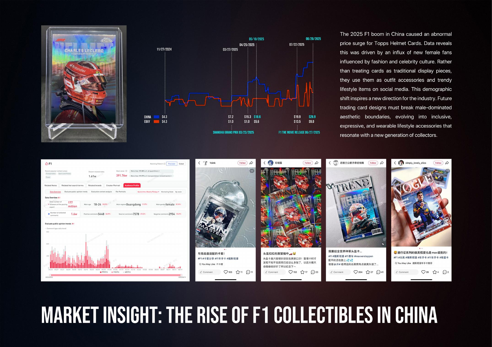
The final board positions speed as a visual fashion system, showing how racing culture can move from track performance into collectible graphics, fan identity, and lifestyle expression.
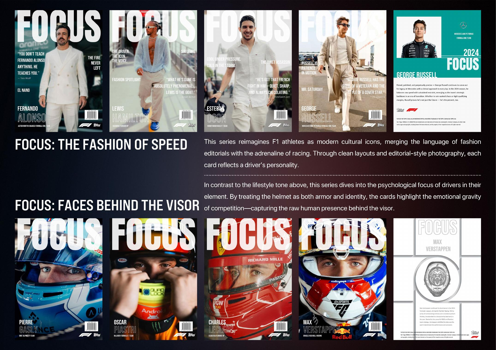
Chronology
-
2025
Lead Product & UX Designer — Breezy (Red Dot Award Winner)
End-to-end UX/UI for a connected healthcare IoT ecosystem, bridging tactile hardware with an iOS companion app. Translated real-time Bluetooth telemetry into accessible data visualizations.
-
2023–2025
Freelance Designer — Shanghai Key Design Group Co., Ltd.
Visual storytelling and diagrammatic logic for high-stakes proposals; streamlined cross-functional design documentation across engineering and design teams; Python-based image processing for generative design iterations.
-
2023–2027
PhD Candidate, Architecture and Built Environment — University of Nottingham, Ningbo
Research on the spatial and social evolution of the Shanghai French Concession; interpretive planning and archival research translated into spatial narratives.
-
2020
Zhejiang Province Institute of Architectural Design
Spatial and project-data presentation for multidisciplinary engineering teams.
- PhD, Architecture and Built EnvironmentUniversity of Nottingham, Ningbo2023–2027
- MSc, Architectural & Urban DesignUniversity of Edinburgh2021–2022
- BEng, ArchitectureUniversity of Nottingham, Ningbo2017–2021
- DesignFigma, Rhino, AutoCAD, SketchUp, Adobe Creative Suite
- AI workflowMidjourney, DALL·E, Python automation, prompt engineering
- ResearchQualitative & visual research, cross-disciplinary analysis, academic writing
- CollaborationCross-functional design/eng teams, bilingual (English/Mandarin)